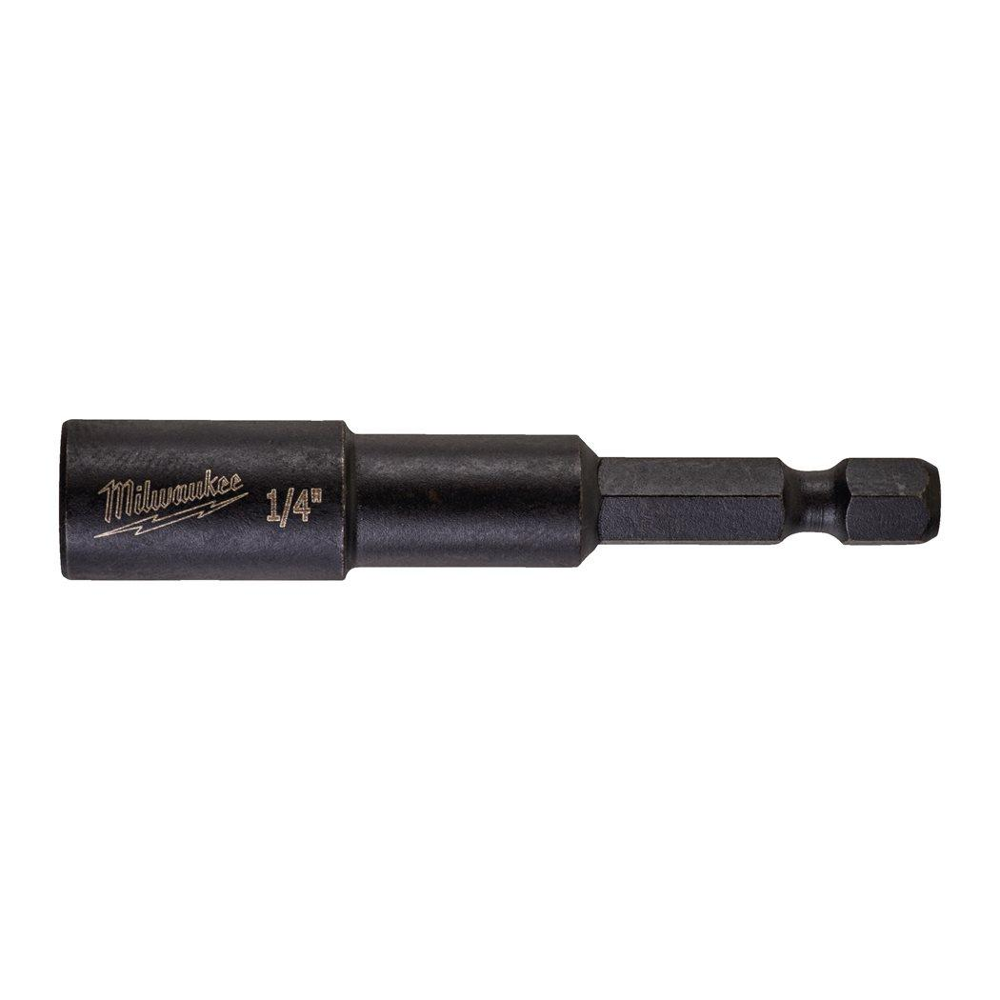
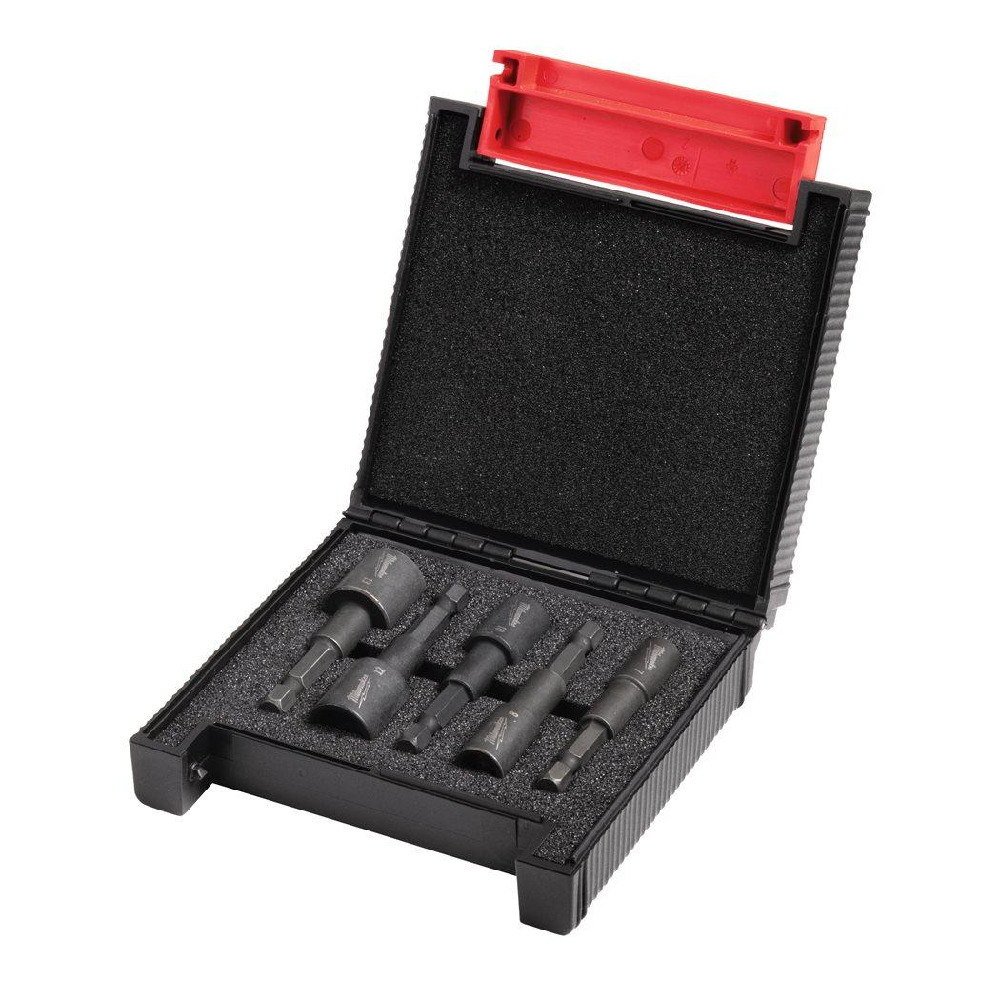
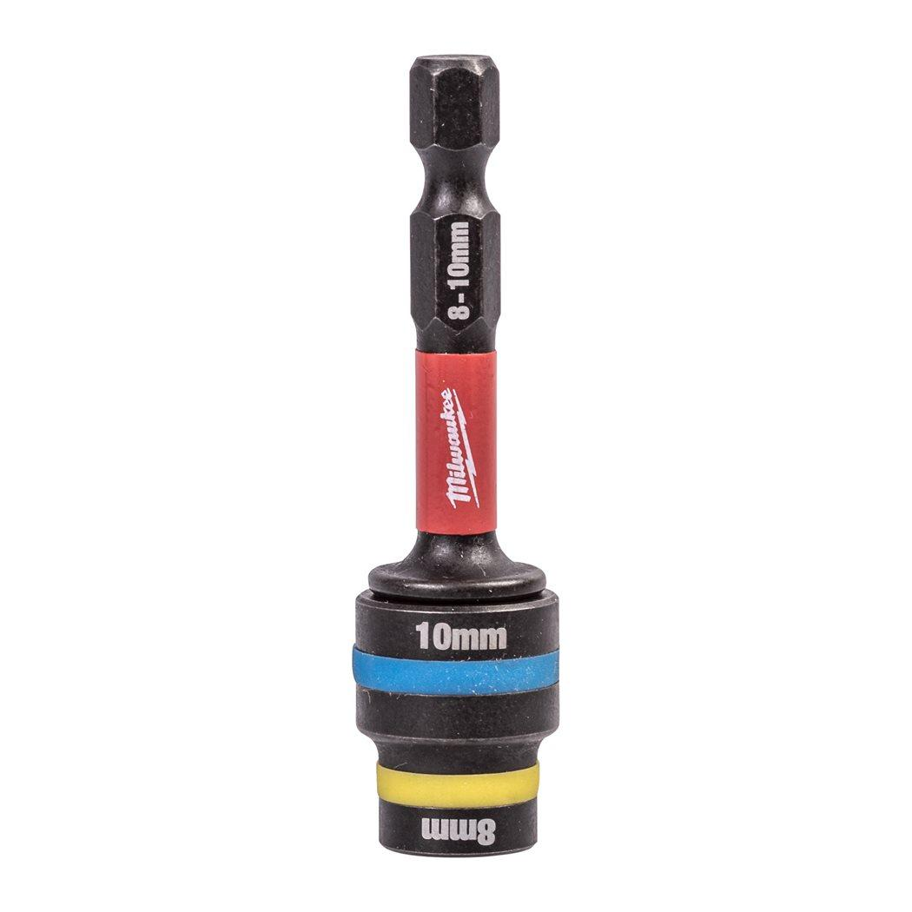
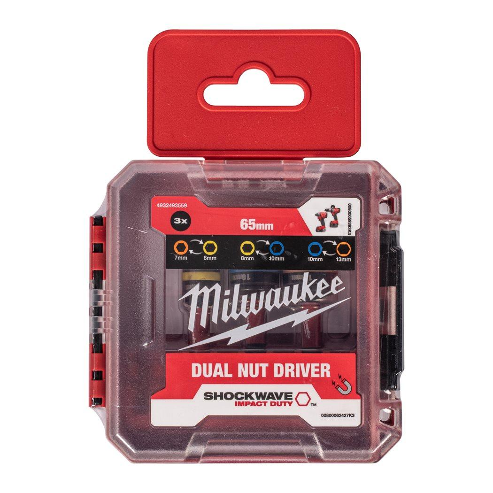
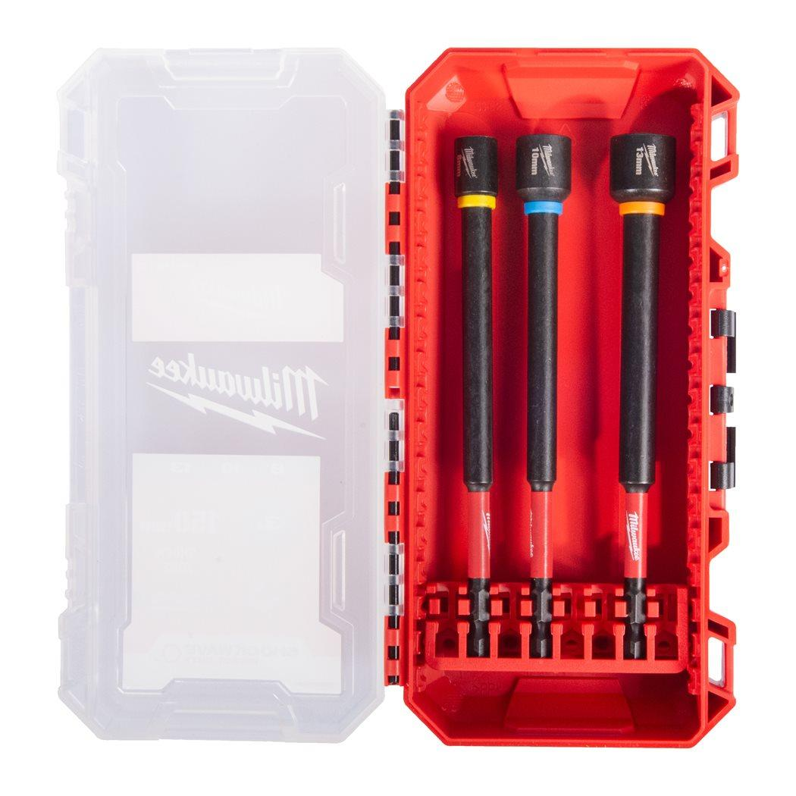
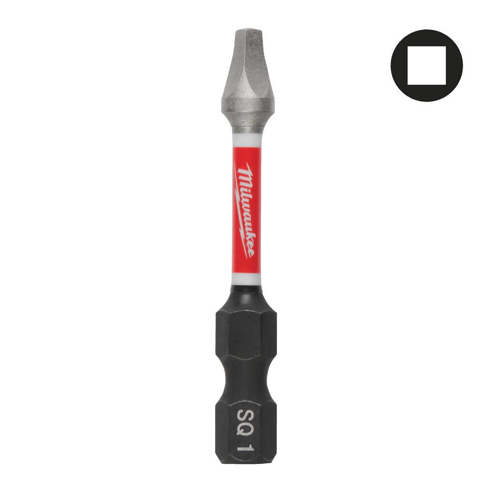

Features
- Custom engineered steel and heat treatment for maximum strength and extreme durability.
- Strong magnetic tip for secure grip.
- 1/4˝ Hex reception (DIN 3126 - E 6.3). Very suitable for high torque and impact applications.
- The nut drivers feature colour coded rings for quick and easy size identification.
Information
| Contents | ⌀ 7 / 8 / 10 / 13 mm |
| Pack quantity | 4 |
| Article Number | 4932492445 |
| EAN | 4058546418120 |